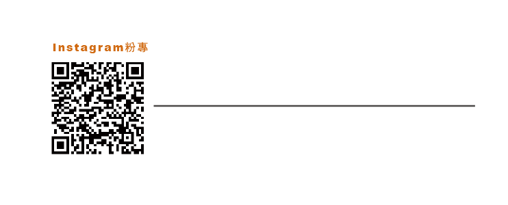
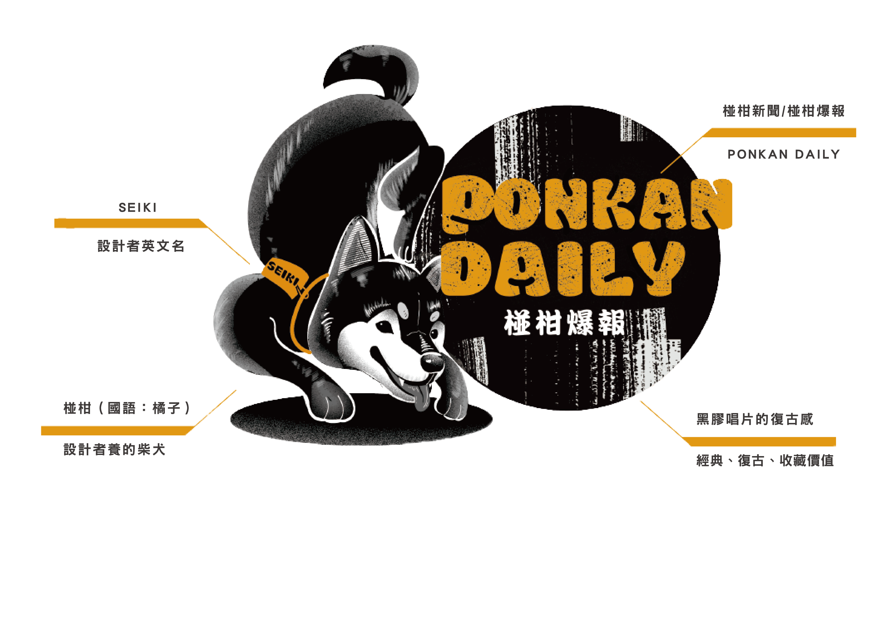

 <!DOCTYPE html>
<html lang="en">
<head>
<meta charset="UTF-8">
<meta charset="UTF-8"></html/>
<meta http-equiv="viewport"content="width=device-width,initial-scale=1.0">
<title>SEIKI Portfolio</title>

<link rel="stylesheet" href="https://cdnjs.cloudflare.com/ajax/libs/font-awesome/5.15.3/css/all.min.css">
<link rel="stylesheet"href="css/style.css">

<script src="https://ajax.googleapis.com/ajax/libs/jquery/3.6.4/jquery.min.js"></script>


</head>


<body>
<!--custom cursors-->
<div class="cursor-1"></div>
<div class="cursor-2"></div>


<div id="menu-bars" class="fas fa-bars"></div>

<!--header section starts-->
<header>
    <a href="#" class="logo"> <span>SEIKI</span> design </a>
    
    <nav class="navbar">
        <a href="#home">home｜首頁</a>
        <a href="#about">About｜關於聖琪</a>
        <a href="#experience">Experience｜活動經驗</a>
        <a href="#service">service｜服務內容</a>
        <div class="dropdown">
        <a href="#graphicdesign" class="dropdown-trigger"> Graphic design｜平面 ▾ </a>
        <ul class="sub-menu">
           <a href="#ponkandaily"> 椪 柑 爆 報 </a></li>
           <a href="#logodesign"> 標 誌 設 計 </a></li>
           <a href="#teamlogo"> 隊 徽 設 計 </a></li>
           <a href="#poster"> 海 報 設 計 </a></li>
           <a href="#t-shirt">T-SHIRT設計</a></li>
         </ul>
        </div>
        
        
        
        <div class="dropdown">
        <a href="#multi-media design" class="dropdown-trigger">Multi-media design｜多媒體▾</a>
        <ul class="sub-menu">
           <a href="#ardesign"> A R 書籍設計</a></li>
           <a href="#app">A P P 介面設計</a></li>
           <a href="#vtuber">V T U B E R 創作</a></li>
           <a href="#ytpicture">遊 戲 影 片 創 作</a></li>
           <a href="#mayadesign">吉 祥 物 設 計</a></li>
          </ul>
        </div>  
        
        
        <a href="#contact">Contact｜聯繫聖琪</a>
    </nav>

    <div class="follow">
        <a href="#" class="fab fa-line"></a>
        <a href="#" class="fab fa-instagram"></a>
        <a href="#" class="fab fa-facebook-f"></a>
    </div>


</header>
<!--header section starts-->
<script src="js/script.js"></script>
<script>
    $(".dropdown-trigger").on("click",function(e){
        $(this).parent().find(".sub-menu").toggleClass("close");
    })
</script>
    
</body>
</html>

<!--home section starts-->

<section class="home"id="home">
    <div class="content">
        <a href="#about"class="btn">About me</a>
    </div>

</section>
<!--home section ends-->

<!--header section starts-->
<section class="about"id="about">
    
<h1 class="heading"> about <span>me</span></h1>

<div class="row-1">
    <div class="image">
        
        <P>・・・・・</P>
</div>
    
<div class="content">
    <br>
    
    <h2>關於SEIKI</h2>
    <br>
    <p>我熱衷於平面設計以及教育領域的知識學習，熟悉PS、AI，跟持續精進網頁設計和MAYA等建模軟體。是一位自由接案者也是一位電腦繪圖教師。</p>
    <br>
    <div class="box-container">
        <div class="box">
    <h2>基本資料</h2>
    
    <p><span>Name：</span>黃聖琪 | SEIKI</p>
    <p><span>Mobile:</span>0979-564-386</p>
    <p><span>E-mail:</span>kiki40619@gmail.com</p>

    </div>

    <div class="box">
    <h2>求學經歷</h2>
    
    <p><span>國立台灣師範大學｜</span>圖文傳播學系碩士</p>
    <p><span>中國文化大學｜</span>大眾傳播學系學士</p>
    <p><span>天主教振聲高級中學｜</span>多媒體設計科</p>
    
    </div>
</div>


<!--home section ends-->

<!--header section starts-->
<h2 class="heading"><span>my </span>skills</h2>

<div class="row-2">
    <div class="skills">
    <div class="progress">
        <h3>Adobe Illustrator<span> 95%</span></h3>
        <div class="bar"><span></span></div>
    </div>
    <div class="progress">
        <h3>Adobe Photoshop<span> 95%</span></h3>
        <div class="bar"><span></span></div>
    </div>
    <div class="progress">
        <h3>Adobe Indesign<span> 80%</span></h3>
        <div class="bar"><span></span></div>
    </div>
    <div class="progress">
        <h3>Adobe After Effects<span> 70%</span></h3>
        <div class="bar"><span></span></div>
    </div>
    <div class="progress">
        <h3>Adobe Premiere Pro<span> 70%</span></h3>
        <div class="bar"><span></span></div>
    </div>
    <div class="progress">
        <h3>HTML | CSS<span> 60%</span></h3>
        <div class="bar"><span></span></div>
    </div>

    
    </div>


</div>

</section>
<!--home section ends-->

<!--header section starts-->
<section class="experience"id="experience">
    
    <h1 class="heading"> <font color="#FFFAF0">SEIKI</font></color>  <span> Experience</span></h1>

    <div class="box-container">

    <div class="box">
           <div class="content">
           <span>2023 </span>
           <h3>・嘉南藥理大學妝品系形象LOGO設計 | 第一名</h3>
           <h3>・台鋼雄鷹隊徽徵選競賽｜入圍複賽</h3>
        </div>
    </div>
    
    <div class="box">
          <div class="content">
          <span>2021 </span>
          <h3>財團法人公共電視文化事業基金會｜學位論文贊助</h3>
          
      </div>
    </div>

    
    <div class="box">
          <div class="content">
          <span>2020</span>
          <h3>國際虛擬人技術論壇暨亞洲黑客松創作大賽｜ Vtuber 亞洲黑客松創意影片競賽特別賞</h3>
      </div>
    </div>

    
    <div class="box">
           <div class="content">
           <span>2019 </span>
           <h3>動腦創意數位行銷培訓營｜最佳創意獎|專案：蒸眼說瞎話</h3>
       </div>
    </div>

    <div class="box">
            <div class="content">
            <span>2017 </span>
            <h3>・財團法人公共電視文化事業基金會｜青少年創意表演營、卡通動畫營｜隊輔</h3>
            <h3>・A-mis複合式沙龍視覺設計｜產業類型：美髮產業</h3>
            <h3>・致理科大企管系廣告展FYE｜產業類型：教育產業</h3>
       </div>
    </div>

    <div class="box">
             <div class="content">
             <span>2016 </span>
             <h3>社團法人新竹市聲暉協會印刷品設計｜產業類型：非營利組織</h3>
       </div>
    </div>

    </div>
   
</section>

<!--home section ends-->


<!--header section starts-->

<section class="service"id="service">
    <h1 class="heading"> SEIKI <span>service</span></h1>
    <div class="box-container">

    <div class="box">
        <i class='fas fa-chalkboard-teacher' style='font-size:30px'></i>
        <h3>一對一教學 </h3>
        <h3>T U T O R</h3>
        <br>
        <p>1. 電腦繪圖  課程</p>
        <p>2. 平面設計  課程</p>
        <p>3. 影像合成  課程</p>
        <p>4. 印刷知識  概念</p>
    </div>

    
    <div class="box">
        <i class='fas fa-palette' style='font-size:30px'></i>
        <h3>平 面 設 計  </h3>
        <h3>G R A P H I C</h3>
        <br>
        <p>1.  海 報 設 計 </p>
        <p>2.  宣 傳  D M </p>
        <p>3.  名 片 設 計 </p>
        <p>4.  主視覺 設計 </p>
        <p>5.  T-shirt 設計</p>
    </div>
    
    
    <div class="box">
        <i class='fas fa-eye' style='font-size:30px'></i>
        <h3>標 誌 設 計 </h3>
        <h3>L O G O</h3>
        <br>
        <p>1.  草 圖 設 計 </p>
        <p>2.  L O G O 設計</p>
        <p>3.  標 準 字 設計</p>
    </div>

    
    <div class="box">
        <i class='fas fa-book' style='font-size:30px'></i>
        <h3>書 籍 設 計 </h3>
        <h3>B O O K</h3>
        <br>
        <p>1.  頁 面 規 劃</p>
        <p>2.  色 彩 規 劃</p>
        <p>3.  編 排 設 計</p>
        <p>4.  印 刷 規 劃</p>
        <p>5.  整體視覺規劃</p>
    </div>

    
    <div class="box">
        <i class='fas fa-film' style='font-size:30px'></i>
        <h3> 影 音 媒 體 </h3>
        <h3>M E D I A</h3>
        <br>
        <p>1.  2 D 動 畫</p>
        <p>2.  影 片 剪 輯</p>
        <p>3.  社群 Banner</p>
        <p>4.  Youtube 縮圖</p>
        <p>5.  社群圖文 創作</p>
    </div>

    
    <div class="box">
        <i class='fas fa-bullhorn' style='font-size:30px'></i>
        <h3>服 務 方 式 </h3>
        <h3>S E R V I C E   M O D E</h3>
        <br>
        <p>1. 聯 繫 SEIKI - 2. 討 論 需 求- 3. 達 成 共 識 - 4.規 劃 安 排 - </p>
        <p>5.進 行 製 作 與 教 學 - 6.編 修 後 完 成 作 品 - 7.完 成 交 易   </p>
        <br>
        
        
    </div>

    


</section>


<!--home section ends-->

<!--header section starts-->
<section class="graphicdesign"id="graphicdesign">

    <h1 class="heading"> Graphic <span>DESIGN</span></h1>
    <div class="box-container">
    <div class="image">
        
        
    </div>

     <div class="box1">
            <h3>椪 柑 爆 報 | Instagram 粉 專 經 營 創 作</h3>
            <p>聖琪在求學的經歷中，學習了大眾傳播與圖文傳播的領域。
                為此創立了「椪柑爆報」整體以報紙形式排版。
                運用傳統紙媒的復古感結合IG平台的貼文創意設計，分享各式各樣的創作之經營。
                由於聖琪養了一隻調皮可愛名為：「椪柑」的柴犬，以此作為椪柑爆報的主體設計。
                其中搭配著市面上椪柑（國語：橘子）代表色「橘色」作為文字上之應用。
                讓整體凸顯爆報是一款歡樂中帶有些許詼諧感的報紙。</p>
            
            
    

    <section class="ponkandaily"id="ponkandaily">
        <div class="box-container">
    <div class="box2">
        
     </div>
     <div class="box">   
        
    </div>


    

    </div>
    
            
    


    
    

    

</section>
<!--home section ends-->
